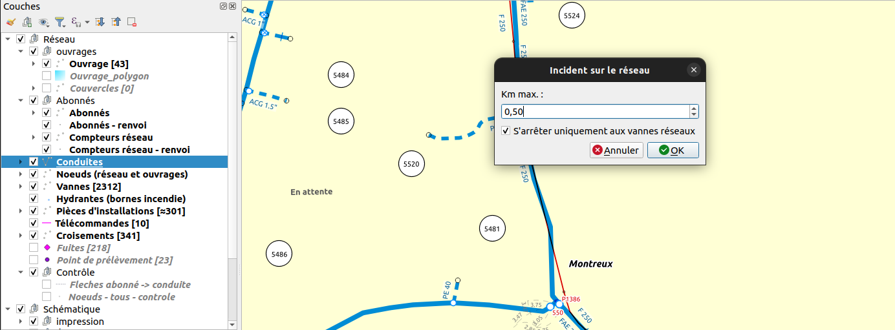
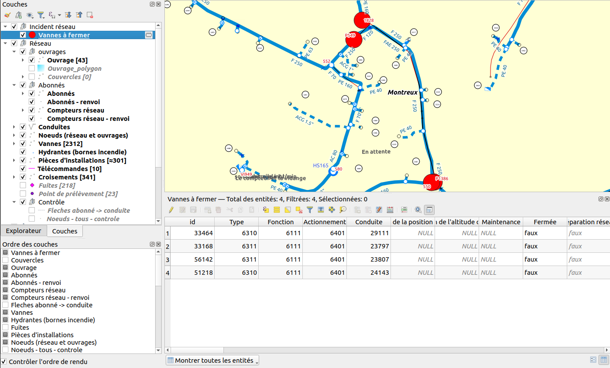
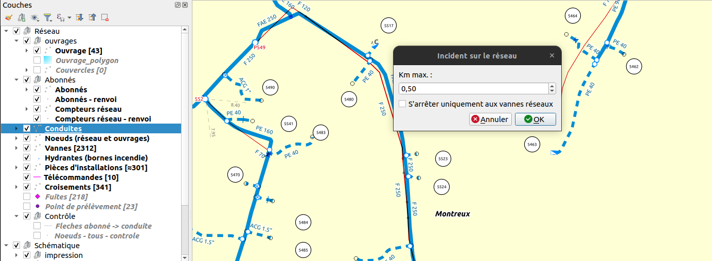
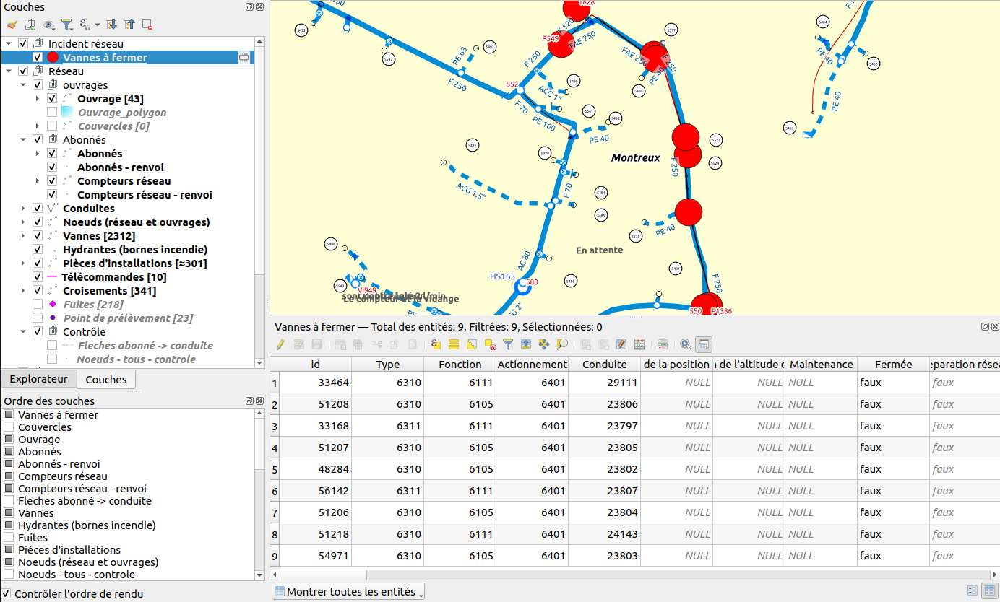
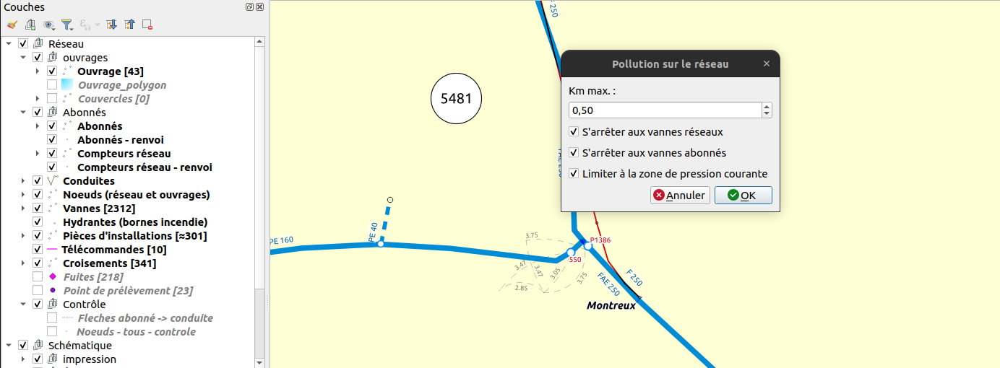
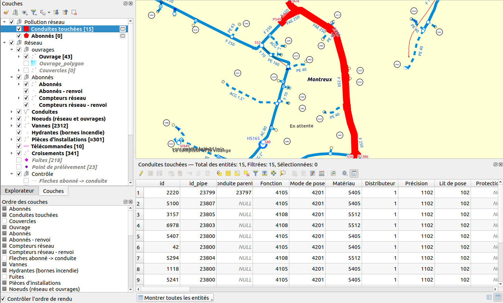
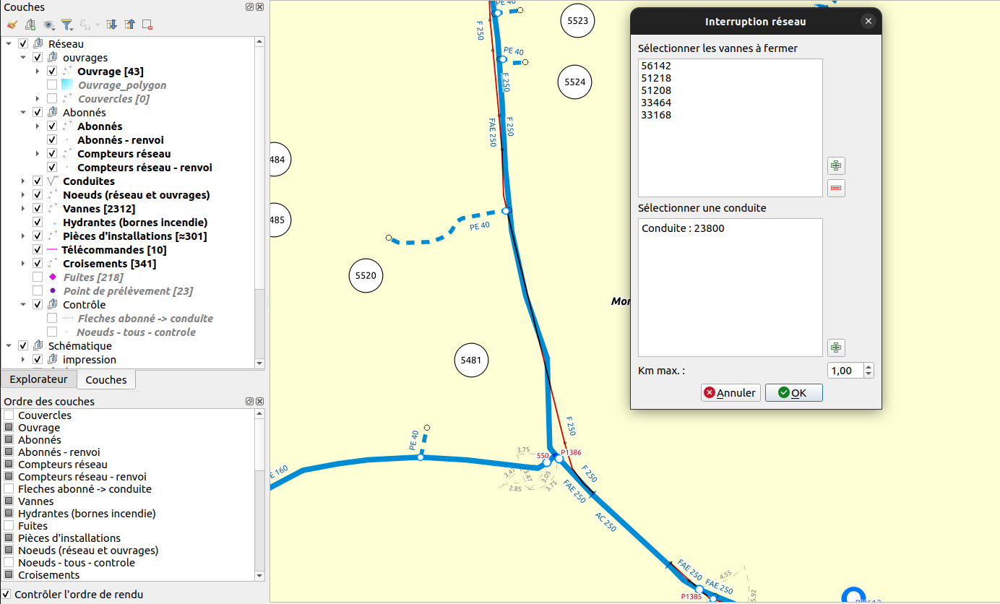
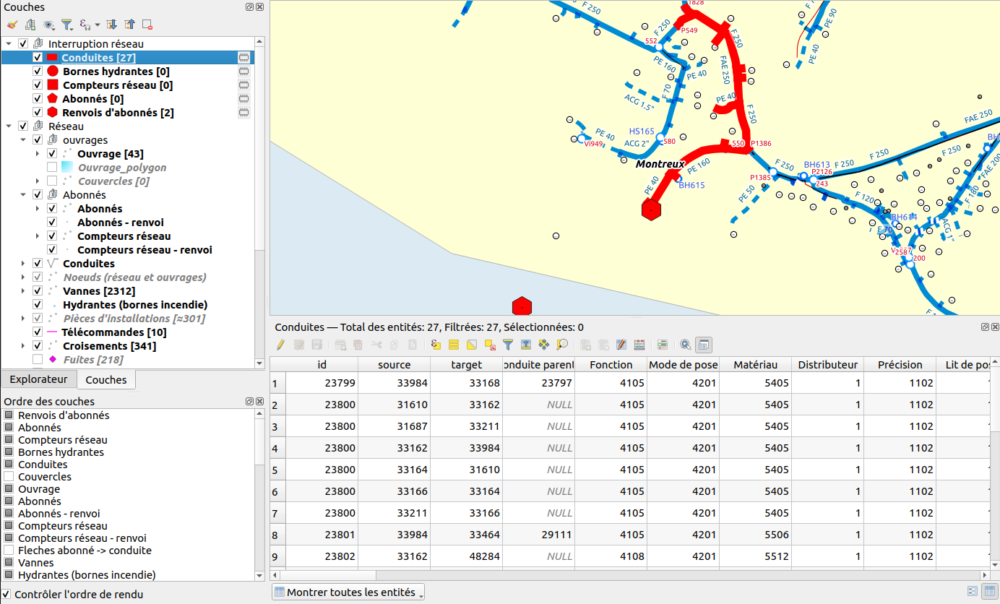

3.9. Simulation d’intervention sur le réseau
Des outils de simulation d’intervention sur le réseau sont disponibles à partir de la version 1.4.0
Ces outils se présentent sous la forme d’actions dans le projet QGIS.
3.9.1. Incident réseau
Cet outil permet d’identifier les vannes réseau à fermer situées au plus proche de l’incident. L’outil est disponible dans l’action „Incident“ sur la couche „Conduites“.
L’incident réseau est situé aux coordonnées où l’utilisateur a exécuté l’action (l’action peut être lancée via un clic droit sur une conduite).
Une boîte de dialogue permet de renseigner le kilométrage maximum à parcourir pour la recherche des vannes à fermer.
L’utilisateur peut également choisir de s’arrêter uniquement sur les vannes réseau ou non avec une case à cocher. Si la case n’est pas cochée, les vannes de branchement seront prises en compte et remontées dans le résultat.
Le résultat est sous la forme d’une couche temporaire. Les vannes à fermer peuvent être consultées via la table attributaire.
Exemple en prenant en compte uniquement les vannes réseau:
Le résultat est le suivant:
Exemple en prenant en compte les vannes réseau et les vannes de branchement:
Le résultat est le suivant:
3.9.2. Pollution réseau
Cet outil permet d’identifier les conduites et les abonnés touchés par une pollution. L’outil est disponible dans l’action „Pollution“ sur la couche „Conduites“.
La pollution réseau est située aux coordonnées où l’utilisateur a exécuté l’action (l’action peut être lancée via un clic droit sur une conduite).
Une boîte de dialogue permet de renseigner le kilométrage maximum à parcourir pour la recherche des conduites et des abonnés.
L’utilisateur peut choisir de s’arrêter aux vannes réseaux, s’arrêter aux vannes abonnés et limiter la recherche à la zone de pression courante grâce aux cases à cocher.
Le résultat est sous la forme d’un groupe de couches temporaires. Les conduites et les abonnés identifiés peuvent être consultés via la table attributaire.
Exemple en s’arrêtant aux vannes réseau et abonnés:
Le résultat est le suivant:
3.9.3. Interruption réseau
Cet outil permet d’identifier les conduites, les compteurs, les bornes hydrantes et les abonnés concernés par une interruption de réseau. L’outil est disponible dans l’action „Coupure de réseau“ sur la couche „Vannes“.
L’interruption de réseau est caractérisée par plusieurs vannes fermées que l’utilisateur identifie lors du lancement de l’action et une conduite pour définir le côté du réseau concerné par l’interruption.
Le résultat est sous la forme d’un groupe de couches temporaires. Les objets du réseau identifiés peuvent être consultés via la table attributaire.
Exemple d’interruption réseau:
Le résultat est le suivant:
